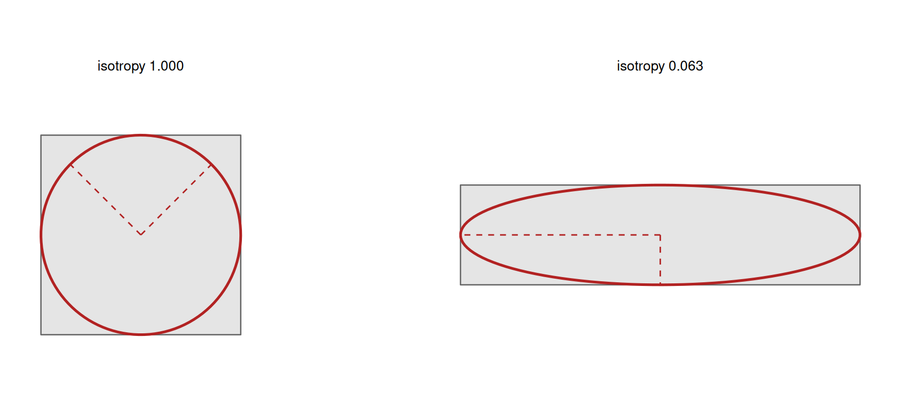

Code
library(shapeindices)
library(sf)
library(ggplot2)
theme_set(theme_minimal(base_size = 11))
theme_gallery <- theme_void(base_size = 10) +
theme(strip.text = element_text(size = 9, face = "bold"))2026-07-22
Source:vignettes/f-understanding-moment-isotropy-index.qmd
library(shapeindices)
library(sf)
library(ggplot2)
theme_set(theme_minimal(base_size = 11))
theme_gallery <- theme_void(base_size = 10) +
theme(strip.text = element_text(size = 9, face = "bold"))
square <- st_polygon(list(rbind(c(0,0), c(10,0), c(10,10), c(0,10), c(0,0))))
make_rect <- function(w, h) st_polygon(list(rbind(c(0,0), c(w,0), c(w,h), c(0,h), c(0,0))))
aspect_seq <- c(1, 2, 4, 10, 20)
rectangles <- lapply(aspect_seq, function(a) make_rect(sqrt(100 * a), sqrt(100 / a)))
names(rectangles) <- sprintf("aspect %gx", aspect_seq)
make_star <- function(n_points, r_outer = 1, r_inner = 0.5, center = c(0, 0)) {
n <- n_points * 2
angles <- seq(pi/2, pi/2 + 2*pi, length.out = n + 1)[1:n]
radii <- rep(c(r_outer, r_inner), n_points)
x <- center[1] + radii * cos(angles); y <- center[2] + radii * sin(angles)
st_polygon(list(rbind(cbind(x, y), c(x[1], y[1]))))
}
ratio_seq <- c(0.9, 0.7, 0.5, 0.3, 0.15)
stars_r <- lapply(ratio_seq, function(r) make_star(6, 5, 5 * r))
names(stars_r) <- sprintf("notch ratio %.2f", ratio_seq)
make_regular_ngon <- function(n, r = 1, center = c(0, 0)) {
ang <- seq(0, 2*pi, length.out = n + 1)[1:n]
st_polygon(list(rbind(cbind(center[1] + r*cos(ang), center[2] + r*sin(ang)), center + c(r, 0))))
}
hexagon <- make_regular_ngon(6, 5)
disk <- st_buffer(st_sfc(st_point(c(0, 0))), dist = 5.64, nQuadSegs = 60)[[1]]
# thin rectangular arms radiating from a small hub, with real empty space
# between them - unlike stars_r above (a single concave outline, no gaps
# of zero mass anywhere), a pinwheel has genuine angular voids, which is
# what makes the effect below visually undeniable rather than a curiosity
# about squares and hexagons
make_pinwheel <- function(n_arms, arm_len = 10, arm_width = 1, hub_r = 0.5) {
angles <- seq(0, 2 * pi, length.out = n_arms + 1)[1:n_arms]
hub <- st_buffer(st_sfc(st_point(c(0, 0))), hub_r, nQuadSegs = 30)[[1]]
arms <- lapply(angles, function(a) {
tip <- c(arm_len * cos(a), arm_len * sin(a))
perp <- c(-sin(a), cos(a)) * arm_width / 2
st_polygon(list(rbind(perp, tip + perp, tip - perp, -perp, perp)))
})
Reduce(function(p, q) st_union(st_sfc(p), st_sfc(q))[[1]], c(list(hub), arms))
}
pinwheels <- lapply(2:6, make_pinwheel)
names(pinwheels) <- sprintf("%d arms", 2:6)moment_isotropy_index() measures how anisotropic - how much it prefers one direction over others - a (multi)polygon’s mass distribution is: the ratio of the smaller to the larger principal moment of its mass inertia tensor, in . It reuses moment_of_inertia_index()’s own machinery exactly - same triangulation, same mass centroid, same / - plus one new quantity, the product of inertia , needed to find the tensor’s eigenvalues.
How this relates to classical eccentricity. If you know ellipses, the natural first guess is that this index is eccentricity - it isn’t, in two ways worth having clear before reading further. For an ellipse with semi-axes , this index works out to , where is the classical eccentricity: related, but not the same formula. And the two run in opposite directions - eccentricity increases from 0 (circle) to 1 (degenerate) as a shape elongates, while this index decreases from 1 toward 0, matching the 1-is-ideal convention every index in this package follows. “Isotropy” states the property directly: a high value means the mass distribution treats every direction alike.
It’s also built differently from the package’s reference-shape indices, and worth being explicit about that up front. convexity_index(), moment_of_inertia_index(), span_index(), and radial_concentration_index() are all “actual value vs. a provably optimal reference shape” comparisons - a rearrangement inequality or bathtub-principle argument shows a disk (or, weighted, concentric rings) is the unique best-possible arrangement, and the index is how close the real shape gets to that ceiling. moment_isotropy_index() has no reference shape at all: it compares the shape’s own two principal moments to each other, an elementary fact about positive semi-definite matrices, not a rearrangement inequality. One consequence worth flagging immediately: an index of 1 does not mean “this is a disk” the way it does for moment_of_inertia_index()/span_index()/radial_concentration_index() - it means the mass distribution is rotationally isotropic about its own centroid, which a disk achieves, but so does a square, a regular hexagon, or anything with three-fold or higher rotational symmetry.
The ratio of an inertia tensor’s smaller to larger eigenvalue, exactly this index’s construction, is an established anisotropy measure - it comes from a different field than the geography-derived compactness literature the rest of this package’s indices draw from (see vignette("d-understanding-span-index")’s Introduction). Materials science and image analysis use it under names like “isotropy index” or “elongation factor,” most notably in the Minkowski-tensor anisotropy framework of Schröder-Turk et al. (2013).1 That framework’s own isotropy index, , is the same eigenvalue ratio computed here, just applied to a mass inertia tensor rather than a Minkowski tensor.
For density (piecewise-constant across the CDT mesh, area-weighted if ), and a point with coordinates and density there, define the second moments about the mass centroid :
moment_of_inertia_index() already computes / (their sum is , its own polar moment) and, as of this index, too - via the standard closed-form polygon product-of-inertia formula, the same triangle-by-triangle shoelace approach / already use. The symmetric matrix
is the shape’s own mass inertia tensor. Its eigenvalues are the two principal moments - the second moments the shape would have about its own two natural (perpendicular) axes, whatever those happen to be, found without ever needing to know the axes’ actual orientation. moment_isotropy_index() is .
has an exact geometric picture - the equivalent ellipse, the unique ellipse with the same second moments as the shape. Its axes point along the tensor’s eigenvectors and its semi-axis lengths are proportional to , so it stretches the same way the shape’s mass does: nearly circular for an isotropic shape, long and thin for an elongated one. The index is exactly the squared ratio of its minor to major axis.

The square’s equivalent ellipse is a circle (both principal moments equal, isotropy 1); the rectangle’s is stretched to the same 4:1 ratio as the shape, so its minor-to-major axis ratio squared - - is the index. Nothing about this needs the shape to be an ellipse; the equivalent ellipse only has to share its two second moments.
is provably positive semi-definite for any mass distribution, by construction rather than by any shape-specific argument: it’s an integral of rank-1 PSD outer products, , where . A sum (or integral) of PSD matrices is PSD, so always, and for any polygon with positive area - only in the degenerate limit where every point of positive mass lies on a single line, never a genuine 2D polygon. That’s the entire proof: no bathtub principle, no rearrangement inequality, no reference shape to derive - just a fact about the algebraic form of itself.
rect10 <- make_rect(sqrt(2000), sqrt(20)) # a 10x-aspect rectangle
res_unrotated <- moment_isotropy_index(st_sfc(rect10))
theta <- 0.37
rot <- matrix(c(cos(theta), sin(theta), -sin(theta), cos(theta)), 2, 2)
rect10_rotated <- st_polygon(list(st_coordinates(rect10)[, 1:2] %*% t(rot)))
res_rotated <- moment_isotropy_index(st_sfc(rect10_rotated))
data.frame(
quantity = c("Ixx", "Iyy", "Ixy", "index"),
unrotated = c(res_unrotated$Ixx, res_unrotated$Iyy, res_unrotated$Ixy, res_unrotated$index),
rotated = c(res_rotated$Ixx, res_rotated$Iyy, res_rotated$Ixy, res_rotated$index)
) |> knitr::kable(format = "html", digits = c(0, 4, 4, 4), row.names = FALSE, escape = FALSE,
col.names = c("quantity",
paste0(shape_thumb(rect10), "<br>unrotated"),
paste0(shape_thumb(rect10_rotated), "<br>rotated 0.37 rad")))| quantity |
unrotated |
rotated 0.37 rad |
|---|---|---|
| Ixx | 333.3333 | 4648.602 |
| Iyy | 33333.3333 | 29018.065 |
| Ixy | 0.0000 | 11125.751 |
| index | 0.0100 | 0.010 |
, , and all change under rotation - none of the three is rotation-invariant on its own. But ’s eigenvalues, and so the index built from them, don’t - the difference between the two index values above is 1.73e-18, floating-point noise rather than any real movement. That’s expected: / are properties of the tensor itself, not of whatever coordinate axes happened to be used to write it down.
data.frame(
shape = c(shape_thumb(disk), shape_thumb(square), shape_thumb(hexagon)),
name = c("disk", "square", "regular hexagon"),
isotropy = c(moment_isotropy_index(st_sfc(disk))$index,
moment_isotropy_index(st_sfc(square))$index,
moment_isotropy_index(st_sfc(hexagon))$index)
) |> knitr::kable(format = "html", digits = 8, row.names = FALSE, escape = FALSE)| shape | name | isotropy |
|---|---|---|
| disk | 1 | |
| square | 1 | |
| regular hexagon | 1 |
All three score (numerically) exactly 1, not just approximately - a square and a hexagon have no preferred axis for their own mass to spread along, so their principal moments are exactly equal, same as a disk’s. Contrast moment_of_inertia_index(), where only the disk reaches the ceiling and a square scores 0.955: that index measures dispersal relative to a disk specifically, while isotropy measures anisotropy relative to the shape’s own two axes, whatever they are. A shape can be maximally isotropy-1 while still being far from round - a hexagon isn’t a disk, it just doesn’t prefer a direction. The next two sections push on exactly how far that separation goes.
There isn’t a deterministic argument, a quadrature parameter, or a Monte Carlo mode to discuss here, and it’s worth being explicit about why rather than leaving the absence unexplained. , , and are exact closed-form polygon integrals, summed triangle by triangle via the shoelace formula - there’s no approximation layer for a deterministic-style argument to switch between. More than that, the sum is provably the same regardless of which valid triangulation produced the triangles: moments are additive over any partition of the polygon into non-overlapping pieces, so any two triangulations of the same region must sum to the same total, as long as each triangle’s own contribution is computed with consistent (CCW) winding - which .moment_of_inertia_core()’s own winding check guarantees regardless of what a particular triangulator happens to produce.
# a fan triangulation from every vertex of a convex, irregular heptagon -
# seven genuinely different triangulations of the exact same region
ang <- c(10, 50, 100, 160, 210, 270, 320) * pi / 180
r <- c(5, 4.2, 5.5, 4.8, 5.1, 4.5, 5.3)
v <- cbind(r * cos(ang), r * sin(ang))
heptagon <- st_polygon(list(rbind(v, v[1, ])))
n <- nrow(v)
fan_from <- function(apex) {
ord <- ((apex + 0:(n - 2)) %% n) + 1 # the other n-1 vertices, in cyclic order
tris <- lapply(seq_len(n - 2), function(k) {
st_polygon(list(rbind(v[apex, ], v[ord[k], ], v[ord[k + 1], ], v[apex, ])))
})
st_sf(area = vapply(tris, function(t) as.numeric(st_area(st_sfc(t))), numeric(1)),
geometry = st_sfc(tris))
}
idx_cdt <- moment_isotropy_index(st_sfc(heptagon),
prep = list(poly = heptagon, tri = cdt_triangles(st_sfc(heptagon))))$index
idx_fan <- vapply(1:n, function(apex) {
moment_isotropy_index(st_sfc(heptagon), prep = list(poly = heptagon, tri = fan_from(apex)))$index
}, numeric(1))
data.frame(triangulation = c("CDT", paste("fan from vertex", 1:n)),
index = c(idx_cdt, idx_fan)) |> knitr::kable(format = "html", digits = 10, row.names = FALSE)| triangulation | index |
|---|---|
| CDT | 0.8382805 |
| fan from vertex 1 | 0.8382805 |
| fan from vertex 2 | 0.8382805 |
| fan from vertex 3 | 0.8382805 |
| fan from vertex 4 | 0.8382805 |
| fan from vertex 5 | 0.8382805 |
| fan from vertex 6 | 0.8382805 |
| fan from vertex 7 | 0.8382805 |
All eight triangulations - the package’s own CDT plus a fan from every one of the heptagon’s seven vertices - agree to floating-point noise (max difference 2.2e-16). The same holds on non-convex polygons via a diagonal flip of an existing CDT mesh (not shown here); it isn’t specific to convex shapes. This is a genuinely different situation from convexity_index()/span_index(), both of which do depend on mesh resolution (finer quadrature or subdivision moves their value, even if only slightly) because they estimate an integral with no closed form. Moment isotropy has nothing to estimate.
| shape | name | isotropy | moment_of_inertia | convexity |
|---|---|---|---|---|
| square | 1.000 | 0.955 | 1.000 | |
| hexagon | 1.000 | 0.992 | 1.000 | |
| disk | 1.000 | 1.000 | 1.000 | |
| aspect 1x | 1.000 | 0.955 | 1.000 | |
| aspect 2x | 0.250 | 0.764 | 1.000 | |
| aspect 4x | 0.063 | 0.449 | 1.000 | |
| aspect 10x | 0.010 | 0.189 | 1.000 | |
| aspect 20x | 0.003 | 0.095 | 1.000 | |
| notch ratio 0.90 | 1.000 | 0.996 | 1.000 | |
| notch ratio 0.70 | 1.000 | 0.957 | 0.998 | |
| notch ratio 0.50 | 1.000 | 0.851 | 0.975 | |
| notch ratio 0.30 | 1.000 | 0.637 | 0.892 | |
| notch ratio 0.15 | 1.000 | 0.373 | 0.724 |
Elongating a rectangle (constant area, growing aspect ratio) collapses isotropy toward 0 fast - by the closed form for a rectangle, , so a 20x aspect ratio gives an index of exactly , matching the table above. moment_of_inertia falls too, but more gently - it’s penalising dispersal from the centroid generally, not elongation specifically, so a stretched-but-not-dispersed shape doesn’t hit its floor as hard.
The star sequence tells the opposite story: deepening notches drag convexity down sharply (that’s what it’s built to detect) while isotropy barely moves - a 6-pointed star with deep notches is still, on average, pulling mass roughly equally in six directions, so its principal moments stay close to equal even as it becomes badly non-convex. Elongation and concavity are independent properties, and this table is the same point the classic-metrics vignette makes with moment_of_inertia_index() vs convexity_index(), made again here with a third, independent axis.
Weighting is exactly as cheap here as for moment_of_inertia_index(), and for the same reason: // are already -weighted sums over triangles, so a weighted isotropy is just the same eigenvalue ratio computed from the weighted tensor - there’s no concentric-rings derivation to redo, because there’s no reference shape in the first place.
prep <- prepare_polygon(st_sfc(disk))
tri <- prep$tri
ang <- atan2(st_coordinates(st_centroid(st_geometry(tri)))[, 2],
st_coordinates(st_centroid(st_geometry(tri)))[, 1])
w_ew <- 1 + 3 * cos(ang)^2 # weight concentrated along the east-west axis
plain <- moment_isotropy_index(st_sfc(disk), prep = prep)
weighted <- moment_isotropy_index(st_sfc(disk), prep = prep, weight = w_ew)
# the shape itself never changes here, so the thumbnail shows the WEIGHT
# distribution (shaded by density) rather than a fixed outline - what
# varies row to row is where the mass sits, not the boundary
data.frame(
weighting = c(weight_thumb(tri, rep(1, nrow(tri))), weight_thumb(tri, w_ew)),
name = c("uniform (area)", "concentrated east-west"),
isotropy = c(plain$index, weighted$index)
) |> knitr::kable(format = "html", digits = 3, row.names = FALSE, escape = FALSE)| weighting | name | isotropy |
|---|---|---|
| uniform (area) | 1.000 | |
| concentrated east-west | 0.538 |
The disk’s own boundary never changes - only how its mass is distributed within it - yet concentrating weight along one axis drops isotropy well below 1. A perfectly round shape is no guarantee of a round mass distribution once weighting enters the picture, the same lesson vignette("e-understanding-radial-concentration-index")’s “weight moves the reference” section makes for that index’s own reference.
| shape | name | moment_isotropy | directional_balance | convexity |
|---|---|---|---|---|
| 2 arms | 0.0025 | 0.9998 | 1.0000 | |
| 3 arms | 1.0000 | 0.9997 | 0.5554 | |
| 4 arms | 1.0000 | 0.9999 | 0.6470 | |
| 5 arms | 1.0000 | 1.0000 | 0.5435 | |
| 6 arms | 1.0000 | 1.0000 | 0.5908 | |
| disk (reference) | 1.0000 | 0.9997 | 1.0000 |
From 3 arms up, moment_isotropy reads exactly 1 - identical, to the precision shown, to a genuine solid disk - despite wide empty sectors between the arms where there’s no mass at all. This isn’t a numerical coincidence: any rank-2 tensor built from vectors arranged with three-fold or higher rotational symmetry is forced to be isotropic, a fact from representation theory rather than anything specific to polygons or mass distributions. directional_balance_index() is fooled the same way, for a related but distinct reason - see vignette("g-understanding-directional-balance-index")’s own “things to watch out for” section, where a 2-armed (dumbbell) shape cancels out because that index only needs two-fold symmetry to zero its first moment. Here, the second moment needs three-fold or higher - which is exactly why the 2-armed case above is the one row where moment_isotropy correctly reads low. Only convexity_index() catches any of these pinwheels for what they visually are.
The distinction worth carrying forward: moment_isotropy_index() measures whether a shape’s mass is spread equally across directions - the two principal moments come out equal - not whether mass is present in every direction. A shape built entirely from a handful of narrow, evenly-spaced spokes satisfies the first condition perfectly while failing the second about as badly as a shape can. Reach for convexity_index(), not this index, when the question is really “does this shape have gaps.”
moment_isotropy_index() is a genuinely different question from this package’s other eleven indices, not a fifth entry in a family: “is this shape convex” (convexity_index(), hull_ratio_index()), “how far is mass dispersed from the centre” (moment_of_inertia_index(), span_index(), radial_concentration_index()), “how round is the boundary/bounding shape” (polsby_popper_index(), reock_index(), width_length_ratio_index()), “does the mass distribution prefer an axis” (moment_isotropy_index()), and “does the mass distribution prefer a bearing” (directional_balance_index(), see vignette("g-understanding-directional-balance-index")) are five separate properties that happen to correlate on many real shapes without being redundant with each other. Two direct side-by-side comparisons already sit above rather than being repeated here: the basic-shapes table in “Illustrations” (isotropy vs. moment_of_inertia_index/convexity_index on the same shapes) and the pinwheel table in “Things to watch out for” (isotropy vs. directional_balance_index/convexity_index on shapes designed to expose each index’s own blind spot).
moment_isotropy_index() measures whether a shape’s mass is spread equally across directions (its two principal moments come out equal), not whether mass is present in every direction - a handful of narrow, evenly-spaced spokes with wide empty gaps between them can satisfy the first condition perfectly while failing the second badly.deterministic argument, no quadrature, no Monte Carlo mode, and provably triangulation-invariant (confirmed above across eight different valid triangulations of the same polygon, agreeing to floating-point noise) - unlike convexity_index()/span_index(), there is no approximation layer for a mesh choice to move.convexity_index(), not this index, when the real question is “does this shape have gaps.”moment_of_inertia_index()’s concentric rings or span_index()’s annulus), a weighted isotropy is just the same eigenvalue ratio computed from the reweighted tensor.moment_of_inertia_index(), span_index(), radial_concentration_index()) on real shapes, but is structurally the odd one out - the only member immune to where the mass’s centre sits, only to the shape of the spread around it.